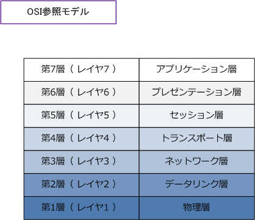
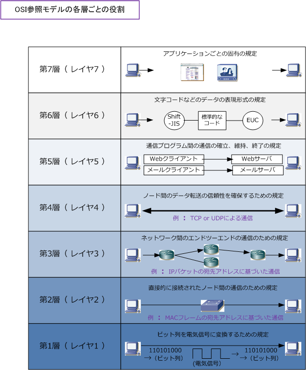
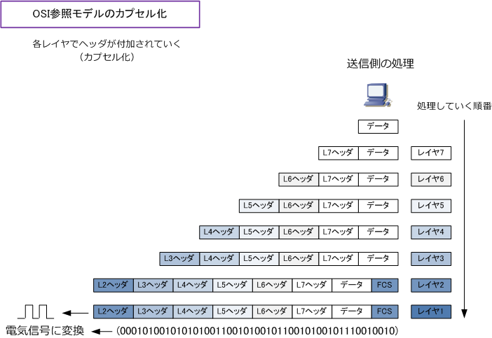
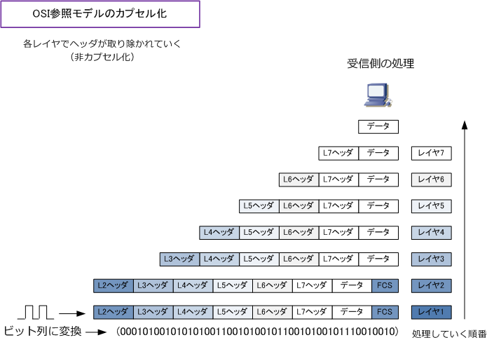

OSI reference model
OSI参照モデルとは
OSI（Open Systems Interconnection）参照モデルとは、国際標準化機構（ISO）により策定された コンピュータなどの通信機器の通信機能を、階層構造に分割したモデルです。このOSI参照モデルでは 通信プロトコルを7つの階層に分けて、それぞれの階層で行われる通信機能を定義しています。また、 OSI参照モデルにより、ネットワーク全体でどのようにデータが伝送されていくのか、ネットワークの 仕組みを分かりやすく理解できるように促進している側面もあります。
ネットワークエンジニアが設計、構築、障害対応などでプロトコルに関して議論する場合は、OSI参照 モデルに基づき話をすることが一般的であり、OSI参照モデルは完全に理解しておく必要があります。
OSI参照モデルの歴史
OSI参照モデルの策定される以前では、コンピュータネットワークは、単一のベンダー（メーカー）の 製品だけで構成されており、異なるベンダーのコンピュータ同士の通信を行うことは難しい状況でした。 ネットワークが普及するにつれ、特定のベンダーに依存することなく異なるベンダーの機器との接続 の要望が増えたため、異機種間の通信を実現するための設計方針（OSI）が1984年に策定されました。
当初、OSI参照モデルに準拠したコンピュータやソフトウェアが開発されていくのを想定していましたが 1990年代にTCP/IPが急速に普及したことでOSI準拠製品は普及しませんでした。つまり、各メーカーの 機器はOSI準拠製品ではなくTCP/IPを実装させた製品としてリリースされていきました。現在、OSI参照 モデルはネットワーク通信の基本的な考え方として使用されており、理解しておくことはとても大切です。
OSI参照モデルの階層構造
OSI参照モデルは第1層から第7層まで7つの層があります。各階層の呼び方は、一般的に数値ではなく 例えば、第１層の場合は「物理層」または「レイヤ1」と呼ばれています。では各層ごとに説明します。

OSI参照モデルの各層ごとの役割
OSI参照モデルの各層では、コンピュータで以下のような役割を担います。詳細は後ほど紹介します。

OSI参照モデルにおけるカプセル化と非カプセル化
コンピュータ間で通信する場合、送信側ではレイヤ７→6→5→4→3→2→1の順番に処理を行っていきます。 各層の規定通りに順番に処理されると、その処理した情報はヘッダとしてデータの前に付加されていきます。 このように上位層の処理情報をヘッダとして下位層で包み込んでいくことをカプセル化といいます。そして レイヤ７から順番に処理されていくと、レイヤ1の処理でデータが最終的に電気信号となって送信されます。 ※ レイヤ2ヘッダでは受信したフレームに誤りがないかどうかを調べるためのFCSヘッダも付加されます。

一方、受信側のコンピュータでは受信した電気信号をレイヤ1→2→3→4→5→6→7の順で処理していきます。 レイヤ1では電気信号をビット列に変換してコンピュータ上に取り込んでいき、レイヤ2ではL2ヘッダの情報に 基づいて処理した上でL2ヘッダを取り外します。レイヤ3以降も同様に、ヘッダ情報に基づいて処理した上で ヘッダをとりはずし、最終的には受信側のコンピュータのアプリケーション上でもとのデータを受け取れます。 このように、下位層から上位層にいくにつれて各層のヘッダを取り外していくことを非カプセル化といいます。

PDU ( プロトコルデータユニット )
PDUは、コンピュータ間の通信において使用されるデータの単位のことです。レイヤ2ではデータの単位を フレーム、レイヤ3ではデータの単位をパケット、レイヤ4ではデータの単位をセグメントと呼んでいます。 以上から、レイヤ2の機器のスイッチなどではフレーム転送、レイヤ3の機器のルータなどではパケット転送 などと言われます。ただし一般的には、コンピュータのデータの単位は「パケット」と呼ぶ人が多いです。 なお、パケットやフレームなどのヘッダを取り除いたデータ部分だけのことはペイロードと呼ばれています。
| レイヤ | PDU |
|---|---|
| レイヤ1 （ 物理層 ） | ビット |
| レイヤ2 （ データリンク層 ） | フレーム |
| レイヤ3 （ ネットワーク層 ） | パケット |
| レイヤ4 （ トランスポート層 ） | セグメント または データグラム |
※ TCPにおけるPDUは「セグメント」と呼び、UDPにおけるPDUは「データグラム」と呼ばれています。